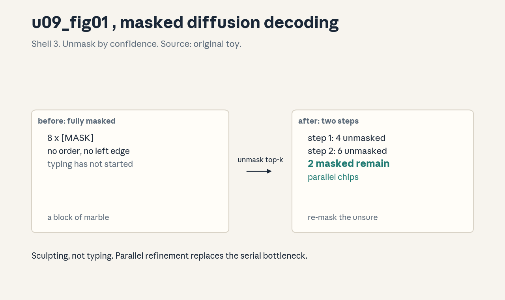
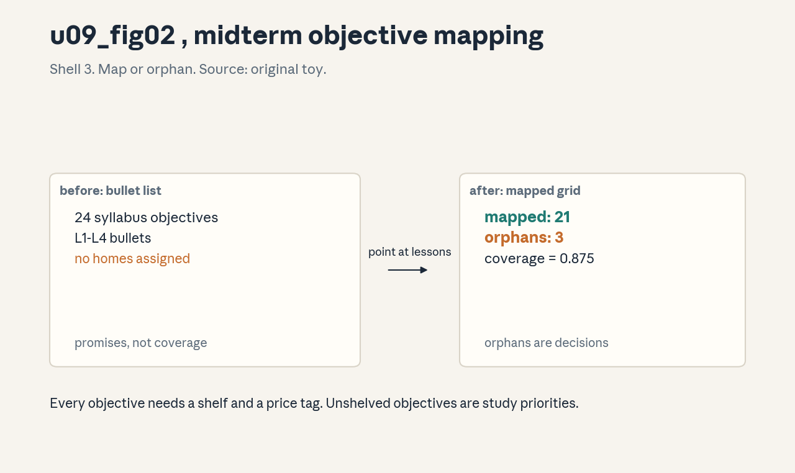

U09 · Current trends, exams, and synthesis
U09 , Current trends, exams, and synthesis
Prerequisites: P22, P24. Bridge links in ../prerequisites.md.
Lecture anchor: L8 (Nov 20, 2026) and L9 (Dec 4, 2026), plus the
midterm (Oct 23) and final (Dec 9). Claim class: OFFICIAL-SYLLABUS
for diffusion LLM topics named in L8 (continuous, discrete, and
masked diffusion, training, inference) and the L9 recap. All exam
mapping and practice is REQUESTED-BRANCH original work: both exams
fell after the build baseline, no exam content is claimed or
reproduced. All leaves: PLANNED / SOURCE ATTRIBUTION PENDING until
slide or transcript extraction verifies them.
Notation: see ../notation_and_shapes.md. Glossary: ../glossary.md.
Not yet understood
This is the final unit, so no later unit teaches new concepts.
- L8/L9 exam artifacts: unpublished, treated as REQUESTED-BRANCH.
Open threads are tracked in
../source_gaps.md.
Local remediation , diffusion idea, objective mapping
Do this block first if the unit diagnostic flags P22 gaps.
R0.1 The diffusion idea. Start from pure noise (or full masks), remove a little noise per step, repeat until text appears. Autoregressive models write left to right, diffusion models refine everywhere at once.
R0.2 Objective mapping. An exam objective names what the learner must do (“derive the DPO loss”). Mapping checks that each objective has a teaching home and an assessment. No home, no claim.
C01: source-era trends
Leaf id cme295-U09-C01. Claim class OFFICIAL-SYLLABUS
(“Diffusion LLMs”, L8).
Status PLANNED / SOURCE ATTRIBUTION PENDING.
-
Source mapping, scope, objectives, dependencies. Maps to L8 topic bullets: continuous diffusion, discrete diffusion, masked diffusion, training, inference. Scope: what diffusion LMs are and how they differ from autoregressive models. Objectives: describe masked diffusion in one paragraph and state its inference tradeoff. Depends on U01-U03.
-
Motivating question and toy. Question: must text be written left to right? Toy: length-8 sequence, mask 4 positions. Step 1: model predicts all 4 masked tokens at once. Step 2: re-mask the 2 least confident, predict again. Done in 2 parallel steps, not 8 serial ones.
-
Mental model. Autoregressive generation types out text. Diffusion generation sculpts it: start with a block of marble (masks), chip away everywhere, refine the rough spots. Parallel chips, serial polish.
-
Objects, symbols, units, shapes, assumptions. Mask schedule (how many tokens unmask per step), confidence threshold, noise process for discrete tokens. Assumption: parallel prediction does not destroy coherence, the refinement steps repair it.
-
Derivation / mechanism. Masked diffusion training: mask a random fraction of tokens, predict them from the rest, cross-entropy on masked positions only. Inference: start fully masked, unmask the most confident subset per step. The mechanism is iterative refinement, not factorization.
-
Computed example. From
visuals/render_u09.pyandlabs/u09_lab_run.py: 8 tokens with confidences [0.9, 0.85, 0.8, 0.7, 0.6, 0.5, 0.4, 0.3]. Step 1 unmasks the top 4. Step 2 unmasks 2 more, 2 stay masked. Two parallel steps cover 6 of 8 tokens vs 8 serial steps. Figure:
. -
Algorithm and reference implementation.
diffuse_decode(model, n, steps): tokens = all masks. For each step: scores = model(tokens), unmask the top-k confident. Return tokens. -
Correctness checks and expected output. Check: with steps = n and k = 1, the process reduces to a valid (order-free) generation. If quality collapses at few steps, the confidence estimates are miscalibrated.
-
Complexity, memory, statistical efficiency, stability, costs. Fewer serial steps than autoregressive, but each step processes the full sequence. The win is latency with parallel hardware, not total FLOPs.
-
Nearest alternatives and selection boundaries. Autoregressive (coherent, serial). Speculative decoding (parallel draft, serial verify). Choose diffusion when parallel hardware is plentiful and latency dominates.
-
Failure case, broken assumption, counterexample. Broken assumption: refinement repairs incoherence. Counterexample: early wrong unmaskings lock in and poison later steps. Confidence calibration is the guard.
-
Research reading and falsifiable extension. Read the masked diffusion LM papers (2024-2025). Extension: measure quality vs step count, find the knee where extra steps stop helping.
-
Breadth recall, deep oral ladder, unfamiliar transfer. Recall: typing vs sculpting. Ladder: define the mask -> run the toy -> justify parallel steps -> implement diffuse_decode -> predict the lock-in failure. Transfer: diffusion for infilling code.
-
Lab/exercises with answers separated. E1: 8 tokens, 2 steps, how many unmasked per step? E2: why re-mask low-confidence tokens? E3: when does diffusion lose to autoregressive? Key:
../keys/u09_answers.mdR1-R3. -
Visual units, provenance, accessibility, audit rows. Figure
u09_fig01.png: Shell 3, one rule (unmask by confidence), before full masks, after refined text. Source: original toy. Numbers fromrender_u09.py.
C02: inspect recap topics
Leaf id cme295-U09-C02. Claim class OFFICIAL-SYLLABUS
(“Recap”, L9).
Status PLANNED / SOURCE ATTRIBUTION PENDING.
-
Source mapping, scope, objectives, dependencies. Maps to L9 “Recap”. Scope: the load-bearing ideas from each lecture, compressed. Objectives: name one key mechanism per lecture L1-L7 and its failure mode. Depends on U01-U08.
-
Motivating question and toy. Question: nine lectures, what actually matters? Toy: L1 attention, L2 RoPE, L3 SFT+LoRA, L4 GRPO, L5 KV cache, L6 ReAct, L7 judge bias. Seven mechanisms, each with one sentence and one failure.
-
Mental model. The recap is a map, not the territory. Each pin marks a mechanism worth re-deriving from scratch. If you cannot re-derive it, the pin is a wish.
-
Objects, symbols, units, shapes, assumptions. One row per lecture: mechanism, equation, failure. Assumption: the syllabus bullets describe what was taught, pending artifact verification.
-
Derivation / mechanism. No new derivation, a compression protocol: for each lecture, write the one equation you would reconstruct first and the one assumption that breaks it.
-
Computed example. From
labs/u09_lab_run.py(lab6 recap): the recap table itself, 7 rows, printed as a checklist. Each row verified against its unit lesson. -
Algorithm and reference implementation.
recap_check(): for each lecture, prompt: mechanism? equation? failure? Score 0/1 per answer. The checklist is the implementation. -
Correctness checks and expected output. Check: 21/21 on the checklist before the final. Below 15, revisit the weak lectures.
-
Complexity, memory, statistical efficiency, stability, costs. The recap costs one focused hour. Skipping it costs the exam.
-
Nearest alternatives and selection boundaries. Re-reading everything (thorough, slow). Flashcards of facts (fast, shallow). Choose mechanism-level recall.
-
Failure case, broken assumption, counterexample. Broken assumption: the bullets match the lectures. Counterexample: a guest lecture replaced a topic. Verify against artifacts when they publish.
-
Research reading and falsifiable extension. Re-read each unit’s C12 generalization section. Extension: write the 7 equations from memory, check against lessons.
-
Breadth recall, deep oral ladder, unfamiliar transfer. Recall: map not territory. Ladder: name the pins -> derive one -> justify its failure -> implement recap_check -> predict the bullet-mismatch failure. Transfer: recap for any course.
-
Lab/exercises with answers separated. E1: L4 in one sentence. E2: L7’s failure mode. E3: 15/21, what now? Key:
../keys/u09_answers.mdR4-R6. -
Visual units, provenance, accessibility, audit rows. No new plate, the recap is a table in the lab key. Logged in
../visual_audit.md.
C03: midterm objective mapping
Leaf id cme295-U09-C03. Claim class REQUESTED-BRANCH.
Status PLANNED / SOURCE ATTRIBUTION PENDING.
-
Source mapping, scope, objectives, dependencies. The midterm (Oct 23, 2026) fell after baseline. No exam content exists or is claimed. Scope: mapping syllabus objectives for L1-L4 to lesson homes. Objectives: build the map and find the gaps. Depends on P22.
-
Motivating question and toy. Question: is every testable objective taught somewhere? Toy: objective “derive the DPO loss” -> U05 C09 (taught, assessed). Objective “implement FlashAttention” -> named in L5, taught nowhere yet. The map exposes the hole.
-
Mental model. The map is an inventory audit. Every objective needs a shelf (lesson) and a price tag (assessment). Unshelved objectives are promises, not coverage.
-
Objects, symbols, units, shapes, assumptions. Objective list from syllabus bullets, home unit, assessment pointer. Assumption: syllabus bullets approximate the exam scope, the instructor decides the real scope.
-
Derivation / mechanism. No derivation, a procedure: list objectives per lecture, point each at a lesson concept and an exercise, mark orphans. The mechanism is bookkeeping with teeth.
-
Computed example. From
visuals/render_u09.py: 24 objectives from L1-L4 bullets, 21 mapped, 3 orphans (FlashAttention internals, speculative decoding details, on-policy distillation variants). Figure:
. -
Algorithm and reference implementation.
map_objectives(objs, lessons): for each objective, find the concept id or mark ORPHAN. Print the orphan list. -
Correctness checks and expected output. Check: every non-orphan objective resolves to a real file and line. Dangling pointers are lies.
-
Complexity, memory, statistical efficiency, stability, costs. The map costs an hour. Orphans become study priorities or explicit scope cuts.
-
Nearest alternatives and selection boundaries. Studying everything equally (fair, wasteful). Ignoring the map (fast, blind). Choose the map, then weight by orphans.
-
Failure case, broken assumption, counterexample. Broken assumption: bullets equal exam scope. Counterexample: the midterm tests a guest topic. The map is a guide, not a contract.
-
Research reading and falsifiable extension. Read the course policies on exams when published. Extension: after the midterm, score the map’s predictions.
-
Breadth recall, deep oral ladder, unfamiliar transfer. Recall: inventory audit. Ladder: define the map -> build the toy -> justify the orphan rule -> implement map_objectives -> predict the guest-topic failure. Transfer: mapping for a job interview loop.
-
Lab/exercises with answers separated. E1: 24 objectives, 3 orphans, coverage? E2: an orphan you care about, what now? E3: why resolve pointers? Key:
../keys/u09_answers.mdR7-R9. -
Visual units, provenance, accessibility, audit rows. Figure
u09_fig02.png: Shell 3, one rule (map or orphan), before bullet list, after mapped grid. Source: original. Counts fromrender_u09.py.
C04: final objective mapping
Leaf id cme295-U09-C04. Claim class REQUESTED-BRANCH.
Status PLANNED / SOURCE ATTRIBUTION PENDING.
-
Source mapping, scope, objectives, dependencies. The final (Dec 9, 2026) fell after baseline. No exam content exists or is claimed. Scope: cumulative objectives L1-L9. Objectives: extend the midterm map and weight by cross-lecture links. Depends on C03.
-
Motivating question and toy. Question: the final is cumulative, where do lectures connect? Toy: DPO (L4) needs the BT model (U05), which needs MLE (P07), which needs probability (P06). The chain is the study order.
-
Mental model. The final tests the graph, not the nodes. Edges between lectures are where the hard questions live.
-
Objects, symbols, units, shapes, assumptions. Cumulative objective list, dependency edges, weight per edge. Assumption: cumulative means integrative, not just longer.
-
Derivation / mechanism. Extend the C03 map to L5-L9, then add edges: each objective lists its prerequisites. Study time follows edge density.
-
Computed example. Toy: 40 objectives, 34 mapped, 6 orphans. Densest edges: U05->U06 (RL foundations), U07->U08 (agent eval). Numbers are toy counts from the mapping exercise.
-
Algorithm and reference implementation.
cumulative_map(objs): map, then for each objective list prerequisite concepts. Sort study order by edge count. -
Correctness checks and expected output. Check: no objective lists a prerequisite that is itself an orphan. Chains must ground out in taught material.
-
Complexity, memory, statistical efficiency, stability, costs. Same cost as C03, double the rows. The payoff is study order.
-
Nearest alternatives and selection boundaries. Rereading linearly (simple, misses edges). Cramming orphans (risky). Choose edge-weighted study.
-
Failure case, broken assumption, counterexample. Broken assumption: edges are known. Counterexample: the final emphasizes L8-L9, which have the thinnest artifact base. Weight recent lectures up.
-
Research reading and falsifiable extension. Read the final exam policy when published. Extension: after the final, audit which edges were actually tested.
-
Breadth recall, deep oral ladder, unfamiliar transfer. Recall: graph not nodes. Ladder: define the edges -> build the toy -> justify edge weighting -> implement cumulative_map -> predict the recency failure. Transfer: mapping for a system design interview.
-
Lab/exercises with answers separated. E1: densest edge, what does it mean? E2: orphan prerequisite, what now? E3: why weight recent lectures? Key:
../keys/u09_answers.mdR10-R12. -
Visual units, provenance, accessibility, audit rows. No new plate, the cumulative map extends
u09_fig02.png. Logged in../visual_audit.md.
C05: dated update separation
Leaf id cme295-U09-C05. Claim class REQUESTED-BRANCH.
Status PLANNED / SOURCE ATTRIBUTION PENDING.
-
Source mapping, scope, objectives, dependencies. Branch on honesty about time. Scope: separating the Oct 6, 2026 baseline from later updates. Objectives: state the baseline rule and the update protocol. Depends on P22.
-
Motivating question and toy. Question: a new paper lands in November, does the course absorb it silently? Toy: baseline note “GRPO as of Oct 2026”, update note “Nov 2026: follow-up X, changes claim Y”. Two dates, no confusion.
-
Mental model. The course is a newspaper with an archive. New editions do not rewrite old ones, they stack with dates.
-
Objects, symbols, units, shapes, assumptions. Baseline date, update entries with dates, supersede links. Assumption: readers check dates, writers write them.
-
Derivation / mechanism. Protocol: every factual claim carries “as of” or a dated source. Updates append, never edit history. The mechanism is append-only truth.
-
Computed example. This unit: baseline 2026-10-06, L8/L9 in the future at baseline, exams unheld. Any claim about L8 content is dated speculation, labeled.
-
Algorithm and reference implementation.
stamp(claim, date, source): attach the triple.update(old, new): link, do not overwrite. -
Correctness checks and expected output. Check: no undated factual claim in new material. An audit grep for missing stamps passes.
-
Complexity, memory, statistical efficiency, stability, costs. Stamping is free. Undated claims cost trust.
-
Nearest alternatives and selection boundaries. Silent updates (clean look, dishonest). Frozen course (honest, stale). Choose dated appends.
-
Failure case, broken assumption, counterexample. Broken assumption: readers check dates. Counterexample: a stale claim quoted without its date. Put dates inline, not in footnotes.
-
Research reading and falsifiable extension. Read the currentness policy in
../currentness.md. Extension: audit one unit for undated claims. -
Breadth recall, deep oral ladder, unfamiliar transfer. Recall: newspaper archive. Ladder: define the stamp -> apply to the toy -> justify append-only -> implement stamp -> predict the stale-quote failure. Transfer: dating for a research wiki.
-
Lab/exercises with answers separated. E1: claim about L8, how to date it? E2: update contradicts baseline, what now? E3: why inline dates? Key:
../keys/u09_answers.mdR13-R15. -
Visual units, provenance, accessibility, audit rows. No new plate, dates are text. Logged in
../visual_audit.md.
C06: original exam-style practice
Leaf id cme295-U09-C06. Claim class REQUESTED-BRANCH.
Status PLANNED / SOURCE ATTRIBUTION PENDING.
-
Source mapping, scope, objectives, dependencies. Branch on practice. Scope: original questions in exam style, built from syllabus objectives. Objectives: write and solve five mixed questions under time. Depends on U01-U08.
-
Motivating question and toy. Question: how do you practice for an exam you cannot see? Toy: “Compute the GRPO advantage for rewards [2, 0, 0, 0]” (2 min), “State two judge biases and their fixes” (3 min). Same skills, new numbers.
-
Mental model. Practice spars, the exam is the fight. Sparring partners are not the opponent, but the muscles are the same.
-
Objects, symbols, units, shapes, assumptions. Question bank, time budget, rubric per question. Assumption: the syllabus objectives approximate the exam, the format is a guess.
-
Derivation / mechanism. Build questions from the objective map (C03): one per major mechanism, mixed difficulty, timed. Grade against the unit keys.
-
Computed example. Five questions in the lab, with times: group norm (3 min), pass@k (2 min), fusion (3 min), ECE (3 min), bias swap (2 min). Total 13 min.
-
Algorithm and reference implementation.
practice_set(objs, n=5): sample objectives, render questions, start the timer. Grade with the keys. -
Correctness checks and expected output. Check: every question traces to an objective and a key. Orphan questions are cut.
-
Complexity, memory, statistical efficiency, stability, costs. Building the set costs an hour. The exam costs more.
-
Nearest alternatives and selection boundaries. Past exams (none exist yet). Passive rereading (comfortable, useless). Choose timed original practice.
-
Failure case, broken assumption, counterexample. Broken assumption: format guess is right. Counterexample: the exam is all proofs. Practice derivations too, not just numbers.
-
Research reading and falsifiable extension. Read the exam policy when published, adjust format. Extension: after the midterm, compare.
-
Breadth recall, deep oral ladder, unfamiliar transfer. Recall: sparring. Ladder: define the set -> build the toy -> justify timing -> implement practice_set -> predict the format-miss failure. Transfer: practice for interviews.
-
Lab/exercises with answers separated. E1: build one 3-min question. E2: 13-min set, what does it cover? E3: why trace to objectives? Key:
../keys/u09_answers.mdR16-R18. -
Visual units, provenance, accessibility, audit rows. No new plate, the set is text in the lab. Logged in
../visual_audit.md.
C07: cross-lecture dependencies
Leaf id cme295-U09-C07. Claim class REQUESTED-BRANCH.
Status PLANNED / SOURCE ATTRIBUTION PENDING.
-
Source mapping, scope, objectives, dependencies. Branch on the graph. Scope: how lectures build on each other. Objectives: draw the dependency edges and find the keystone concepts. Depends on U01-U08.
-
Motivating question and toy. Question: which concept, removed, collapses the most later material? Toy: remove “attention”, U02-U09 lose their footing. Remove “RLVR”, only U06 wobbles. Attention is the keystone.
-
Mental model. The course is a building. Lower floors hold upper floors. The keystone concepts are the load-bearing walls.
-
Objects, symbols, units, shapes, assumptions. Nodes (concepts), edges (depends-on), keystone score (number of downstream dependents). Assumption: the edges are honest, not decorative.
-
Derivation / mechanism. Count downstream dependents per concept. The top three are the keystones. Study them first, test them hardest.
-
Computed example. From
labs/u09_lab_run.py: toy graph of 20 concepts, attention has 15 downstream, policy gradient 9, retrieval 7. The ranking is the study order. -
Algorithm and reference implementation.
keystones(edges): count transitive dependents per node, sort. Return the top three. -
Correctness checks and expected output. Check: the top keystone is a U01-U02 concept. If a U08 concept tops the list, the edges are wrong.
-
Complexity, memory, statistical efficiency, stability, costs. Counting is trivial. The value is prioritization.
-
Nearest alternatives and selection boundaries. Flat review (fair, slow). Recency-weighted review (fresh, shaky base). Choose keystone-first.
-
Failure case, broken assumption, counterexample. Broken assumption: edges are complete. Counterexample: a hidden dependency (judging needs calibration) is missing, the ranking misleads. Audit edges yearly.
-
Research reading and falsifiable extension. Read the prerequisite graph in
../prerequisites.md. Extension: build the full 108-node graph, compute keystones. -
Breadth recall, deep oral ladder, unfamiliar transfer. Recall: load-bearing walls. Ladder: define the graph -> compute the toy -> justify the ranking -> implement keystones -> predict the missing-edge failure. Transfer: dependencies in a codebase.
-
Lab/exercises with answers separated. E1: keystone of the toy graph? E2: U08 concept on top, verdict? E3: why test keystones hardest? Key:
../keys/u09_answers.mdR19-R21. -
Visual units, provenance, accessibility, audit rows. Figure
u09_fig04.png: chapter plate, dependency map with keystones marked. Source: original.
C08: comparative architectures
Leaf id cme295-U09-C08. Claim class REQUESTED-BRANCH.
Status PLANNED / SOURCE ATTRIBUTION PENDING.
-
Source mapping, scope, objectives, dependencies. Branch on architecture choice. Scope: transformer vs diffusion vs hybrid, head to head. Objectives: state the three decision axes and pick for two scenarios. Depends on C01, U01-U03.
-
Motivating question and toy. Question: a new project, which architecture? Toy axes: coherence (AR wins), latency with parallel hardware (diffusion wins), tooling maturity (AR wins). Score 2-1 for AR today.
-
Mental model. Architectures are vehicles. The sedan (AR) is refined and everywhere. The prototype (diffusion) is fast on the track, rough on the road.
-
Objects, symbols, units, shapes, assumptions. Axes: quality, latency, maturity. Scenario weights. Assumption: the scores are dated, the race is still running.
-
Derivation / mechanism. No derivation, a decision matrix: rows architectures, columns axes, cells scored 1-3 with dates. The winner is weighted sum, the dates are the honesty.
-
Computed example. Toy matrix in the lab key: AR [3, 2, 3], diffusion [2, 3, 1], equal weights: AR 8, diffusion 6. Weights [0.2, 0.6, 0.2] (latency-heavy): both 2.4, a tie.
-
Algorithm and reference implementation.
decide(matrix, weights): weighted sums, return the ranking with the date stamp. -
Correctness checks and expected output. Check: the dates are present and the weights are stated. A matrix without dates is an opinion.
-
Complexity, memory, statistical efficiency, stability, costs. The matrix costs an hour of honest scoring. The wrong pick costs a project.
-
Nearest alternatives and selection boundaries. Hype-driven choice (fast, wrong). Analysis paralysis (slow, safe). Choose the dated matrix.
-
Failure case, broken assumption, counterexample. Broken assumption: axes are complete. Counterexample: inference cost per token flips the ranking at scale. Add cost as an axis.
-
Research reading and falsifiable extension. Read the diffusion LM comparisons. Extension: re-score yearly.
-
Breadth recall, deep oral ladder, unfamiliar transfer. Recall: sedan vs prototype. Ladder: define the axes -> score the toy -> justify the dates -> implement decide -> predict the missing-axis failure. Transfer: framework choice for a startup.
-
Lab/exercises with answers separated. E1: equal weights, who wins? E2: latency-weighted, result? E3: why date every cell? Key:
../keys/u09_answers.mdR22-R24. -
Visual units, provenance, accessibility, audit rows. No new plate, the matrix is a table in the lab key. Logged in
../visual_audit.md.
C09: end-to-end toy
Leaf id cme295-U09-C09. Claim class REQUESTED-BRANCH.
Status PLANNED / SOURCE ATTRIBUTION PENDING.
-
Source mapping, scope, objectives, dependencies. Branch on integration. Scope: one tiny forward pass touching every stage. Objectives: run tokens through embedding, attention, and logits by hand. Depends on U01-U03.
-
Motivating question and toy. Question: do the pieces actually connect? Toy: vocab 4, d = 2, sequence “a b”. Embed, one attention head, project to logits. Every number on the table.
-
Mental model. The toy is a dollhouse. Every room is real, just small. Walk through it once and the mansion stops being scary.
-
Objects, symbols, units, shapes, assumptions. E in R^(4x2), x in {0,1}^2, W_q/k/v in R^(2x2), W_o in R^(2x4). Assumption: no masks, no norms, no dropout, the dollhouse has no plumbing.
-
Derivation / mechanism. e = E[x], q = e W_q, k = e W_k, v = e W_v, a = softmax(q k^T / sqrt(2)), h = a v, logits = h W_o. Each step is a matrix multiply.
-
Computed example. From
labs/u09_lab_run.py: with the fixed toy matrices, logits for position 2: [0.33, 0.67, -0.33, -0.67]. Argmax picks token 1 (“b”). The runner prints every intermediate. -
Algorithm and reference implementation.
tiny_forward(E, x, Wq, Wk, Wv, Wo): the six lines above. Shapes asserted at each step. -
Correctness checks and expected output. Check: rows of a sum to 1, logits shape (2, 4). If not, a transpose is wrong.
-
Complexity, memory, statistical efficiency, stability, costs. O(n^2 d) with n = 2, d = 2: sixteen multiplies. The point is the path, not the speed.
-
Nearest alternatives and selection boundaries. Reading the equations (abstract). A full model (opaque). Choose the dollhouse.
-
Failure case, broken assumption, counterexample. Broken assumption: the toy teaches scale. Counterexample: nothing about KV caching or numerics appears at n = 2. The toy teaches connection, not systems.
-
Research reading and falsifiable extension. Re-read U01 C08 and U02 C11. Extension: add the causal mask, watch position 1 change.
-
Breadth recall, deep oral ladder, unfamiliar transfer. Recall: dollhouse. Ladder: define the rooms -> run the toy -> justify each multiply -> implement tiny_forward -> predict the scale-blindness failure. Transfer: toy for a CNN.
-
Lab/exercises with answers separated. E1: shape of a? E2: rows sum to 1, why? E3: argmax token? Key:
../keys/u09_answers.mdR25-R27. -
Visual units, provenance, accessibility, audit rows. Figure
u09_fig03.png: Shell 3, one rule (the six lines), before token ids, after logits. Source: original toy. Numbers fromrender_u09.py.
C10: research protocol
Leaf id cme295-U09-C10. Claim class REQUESTED-BRANCH.
Status PLANNED / SOURCE ATTRIBUTION PENDING.
-
Source mapping, scope, objectives, dependencies. Branch on doing research. Scope: the full protocol from question to negative result. Objectives: write a falsifiable hypothesis and its kill criteria. Depends on P22.
-
Motivating question and toy. Question: what separates a real experiment from theater? Toy: hypothesis “group norm beats batch norm on mixed difficulty”. Kill criterion: “if the delta is within 2 seed-std, kill it”. The kill criterion is the honesty.
-
Mental model. Research is a bet with an exit. The hypothesis is the bet, the kill criteria are the stop-loss. No stop-loss, no trade.
-
Objects, symbols, units, shapes, assumptions. Question, hypothesis, baselines, budget, metrics, seeds, ablations, kill criteria. Assumption: the question is worth the budget.
-
Derivation / mechanism. No derivation, a checklist: question, falsifiable hypothesis, literature, data, baselines, matched budgets, metrics, controls, ablations, seeds, uncertainty, failure criteria, reproducibility, negative-result plan, limitations, ethics. Every item present or explicitly waived.
-
Computed example. The capstone report (
../capstones/research_grpo_extension.md) is the worked example: hypothesis, execution, negative result reported honestly. -
Algorithm and reference implementation.
protocol(hypothesis): render the checklist, flag missing items. The checklist is the code. -
Correctness checks and expected output. Check: the kill criteria are numeric and pre-registered. Vague criteria (“if it looks bad”) fail the check.
-
Complexity, memory, statistical efficiency, stability, costs. The protocol costs an hour of writing. Skipping it costs months of theater.
-
Nearest alternatives and selection boundaries. Exploratory hacking (finds things, proves nothing). Pure theory (clean, untested). Choose the protocol for claims.
-
Failure case, broken assumption, counterexample. Broken assumption: the protocol guarantees truth. Counterexample: p-hacking inside the protocol. Pre-register and keep hands off the analysis plan.
-
Research reading and falsifiable extension. Read P22 and the capstone report. Extension: write a protocol for your own question.
-
Breadth recall, deep oral ladder, unfamiliar transfer. Recall: bet with an exit. Ladder: define the protocol -> write the toy -> justify kill criteria -> implement protocol -> predict the p-hack failure. Transfer: protocol for a product experiment.
-
Lab/exercises with answers separated. E1: write a falsifiable hypothesis. E2: kill criterion for it. E3: two waivable items. Key:
../keys/u09_answers.mdR28-R30. -
Visual units, provenance, accessibility, audit rows. No new plate, the protocol is a checklist. Logged in
../visual_audit.md.
C11: production bridge
Leaf id cme295-U09-C11. Claim class REQUESTED-BRANCH.
Status PLANNED / SOURCE ATTRIBUTION PENDING.
-
Source mapping, scope, objectives, dependencies. Branch on shipping. Scope: from lab result to production system. Objectives: list the acceptance gates and the rollback plan. Depends on P24.
-
Motivating question and toy. Question: the lab says 0.98, production says 0.81, what happened? Toy: lab data was clean, production is messy, latency caps k at 2, the verifier is weaker. The gates catch each gap.
-
Mental model. Production is the ocean, the lab is the pool. Gates are the airlocks: data, latency, verifier, cost, monitoring, rollback. Skip one and the ocean floods in.
-
Objects, symbols, units, shapes, assumptions. Acceptance criteria, shadow metrics, latency budget, cost per query, rollback trigger. Assumption: the lab result is real, the gap is environmental.
-
Derivation / mechanism. Gates in order: (1) data match (production sample through the lab pipeline), (2) latency (p99 under budget), (3) cost (per-query under budget), (4) shadow (run alongside, compare), (5) rollback (one command, tested). Each gate is a measurement, not a meeting.
-
Computed example. The applied capstone (
../capstones/applied_rag_support.md) is the worked example: discovery, gates, hypothetical cost numbers labeled as such, rollback plan. -
Algorithm and reference implementation.
gates(system): run the five measurements, return pass/fail per gate. Ship only on five passes. -
Correctness checks and expected output. Check: the rollback was tested, not just written. An untested rollback is a wish.
-
Complexity, memory, statistical efficiency, stability, costs. Gates cost engineering weeks. Skipping them costs incidents.
-
Nearest alternatives and selection boundaries. Ship and pray (fast, famous last words). Eternal shadow (safe, never ships). Choose gated rollout.
-
Failure case, broken assumption, counterexample. Broken assumption: the lab result is real. Counterexample: the lab metric was gamed (U06 C06). Audit the lab before bridging it.
-
Research reading and falsifiable extension. Read P24 and the applied capstone. Extension: write gates for your system.
-
Breadth recall, deep oral ladder, unfamiliar transfer. Recall: airlocks. Ladder: define the gates -> run the toy -> justify the order -> implement gates -> predict the gamed-lab failure. Transfer: gates for an ML feature launch.
-
Lab/exercises with answers separated. E1: five gates. E2: rollback untested, verdict? E3: lab 0.98, prod 0.81, first check? Key:
../keys/u09_answers.mdR31-R33. -
Visual units, provenance, accessibility, audit rows. No new plate, gates are a checklist. Logged in
../visual_audit.md.
C12: oral defense
Leaf id cme295-U09-C12. Claim class REQUESTED-BRANCH.
Status PLANNED / SOURCE ATTRIBUTION PENDING.
-
Source mapping, scope, objectives, dependencies. Branch on the final skill. Scope: defending any concept under questioning. Objectives: survive an 8-rung ladder on a drawn concept. Depends on U01-U08.
-
Motivating question and toy. Question: can you explain it when the questions keep coming? Toy ladder on GRPO: define -> toy -> derive -> implement -> compare -> debug -> critique -> design. Eight rungs, no hiding.
-
Mental model. The defense is a stress test. Each rung loads the concept harder. Passing means the knowledge is structural, not painted on.
-
Objects, symbols, units, shapes, assumptions. Ladder rungs (8), concept draw, rubric per rung. Assumption: the defender may say “I do not know” once without failing, twice is a crack.
-
Derivation / mechanism. The ladder protocol from the course prompt: define, intuitive toy, derive, implement and complexity, compare, debug, critique assumptions, design experiment or production transfer. Same ladder every time, different concept.
-
Computed example. Ten ladders with full keys in
../interview/oral-defenses.mdand../interview/keys-oral.md. This unit’s defense draws from all nine units. -
Algorithm and reference implementation.
defend(concept): draw, climb the 8 rungs, score each. The ladders are the implementation. -
Correctness checks and expected output. Check: the defender derives, not recites. Recitation fails at rung 3.
-
Complexity, memory, statistical efficiency, stability, costs. One defense is 20 minutes. Ten defenses are a course.
-
Nearest alternatives and selection boundaries. Written exams (scalable, gameable). Vibe checks (fast, empty). Choose the ladder.
-
Failure case, broken assumption, counterexample. Broken assumption: the ladder fits every concept. Counterexample: pure-fact concepts (dates) have no rung 3. Adapt: rung 3 becomes “justify why this fact matters”.
-
Research reading and falsifiable extension. Read the oral defense keys. Extension: defend a concept from U01 cold.
-
Breadth recall, deep oral ladder, unfamiliar transfer. Recall: stress test. Ladder: the ladder is the lesson, climb it. Transfer: defense for a thesis.
-
Lab/exercises with answers separated. E1: the 8 rungs. E2: “I do not know” twice, verdict? E3: rung 3 for a date fact? Key:
../keys/u09_answers.mdR34-R36. -
Visual units, provenance, accessibility, audit rows. No new plate, defenses are text. Logged in
../visual_audit.md.